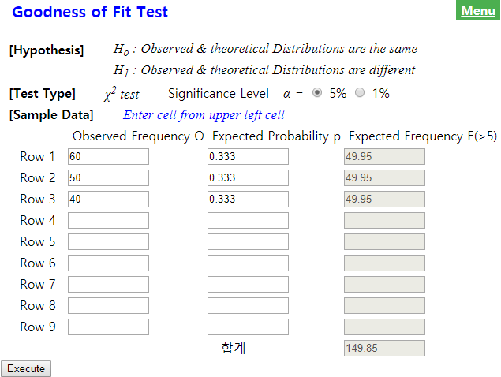
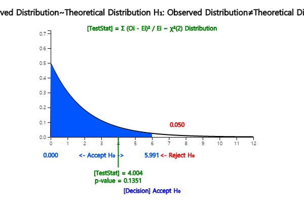

| Candidate | Number of Supporters | Percent |
|---|---|---|
| A | 60 | 40.0％ |
| B | 50 | 33.3％ |
| C | 40 | 25.7％ |
| Total | 150 | 100% |
Answer
Assume each of candidate A, B, and C’s approval rating is \(p_1 , p_2 , p_3\) respectively. The hypothesis for this problem is as follows:
If the null hypothesis \(\small H_0\) is true that the three candidates have the same approval rating, each candidate will have 50 (= 150\(\times \frac{1}{3}\) ) supporters out of total 150 people. It is referred to as the ‘expected frequency’ of each candidate when \(\small H_0\) is true. For each candidate, the number of observed supporters in the sample is called the 'observed frequency'. If \(\small H_0\) is true, the observed and expected number of supporters can be summarized as the following table.
| Candidate | Observed frequency (denoted as \(O_i\)) |
Expected frequency (denoted as \(E_i\)) |
|---|---|---|
| A | \(O_1 = 60\) | \(E_1 = 50\) |
| B | \(O_2 = 50\) | \(E_2 = 50\) |
| C | \(O_3 = 40\) | \(E_3 = 50\) |
| Total | 150 | 150 |
If \(\small H_0\) is true, the observed frequency (\(\small O_i\)) and the expected frequency (\(\small E_i\)) will coincide. Therefore, in order to test the hypothesis, a statistic which uses the difference between \(\small O_i\) and \(\small E_i\) is used. Specifically, the statistic to test the hypotheses is as follows:
If the observed value of this test statistic is close to zero, it can be considered that \(\small H_0\) is true, because \(\small O_i\) is close to \(\small E_i\). If the observed value is large, \(\small H_0\) will be rejected. The question is, 'How large value of the test statistic would be considered as the statistically significant one?' It can be shown that this test statistic approximately follows the chi-square distribution with \(k-1\) degrees of freedom if the expected frequency is large enough. Here \(k\) is the number of categories (i.e., candidates) in the table and it is 3 in this example. Therefore, the decision rule to test the hypotheses is as follows:
The statistic \(\chi_{obs}^2\) can be calculated as follows:
Since the significance level α is 5％, the critical value can be found from the chi-square distribution as follows:
Therefore, \(\small H_0\) can not be rejected. In other words, although the above sample frequency table shows that the approval ratings of the three candidates differ, this difference does not provide sufficient evidence to conclude that the three candidates have different approval ratings.
Using each candidate's sample approval rating \(\hat p_1 = \frac{60}{150}\) = 0.40, \(\hat p_2 = \frac{50}{150}\) = 0.33, \(\hat p_1 = \frac{40}{150}\) = 0.27, 95% confidence intervals for the population proportion of each candidate's approval rating using the formula (\( {{\hat p}} ± 1.96 \sqrt { \hat p (1- \hat p ) / n } \)) (refer Chapter 6.4) are as follows:
The overlapping of the confidence intervals on the three candidates' approval ratings does not mean that one candidate's approval rating is completely different from the other.
In the Input box that appears by selecting the 'Goodness of Fit Test' of 『eStatU』, enter the 'Observed Frequency' and 'Expected Probability' data as shown in <Figure 11.1.1>. After entering the data, select the significance level and click [Execute] button to calculate the 'Expected Frequency' and to see the result of the chi-square test. Be sure that this chi-square goodness of fit test should be applied when the expected frequency of each category is at least 5.
|

<Figure 11.1.1> Goodness of fit test in 『eStatU』
|

| \(X\) | \(P(X = x)\) |
|---|---|
| \(x_1\) | \(p_1\) |
| \(x_2\) | \(p_2\) |
| \(\cdots\) | \(\cdots\) |
| \(x_k\) | \(p_k\) |
| Total | 1 |
When random samples are collected from the population of the categorical random variable X and their observed frequencies are (\(O_1 , O_2 , ... , O_k \)), the hypothesis to test the population probability distribution of (\(p_1 , p_2 , ... , p_k \)) = (\(p_{10} , p_{20} , ... , p_{k0} \)) is as follows:
If the total number of samples \(n\) is large enough, the above hypothesis can be tested using the following decision rule of the chi-square test statistic. $$ \text{‘If } \chi_{obs}^{2} = \sum_{i=1}^{k} \frac { (O_{i} - E_{i} )^{2}} {E_{i}} > \chi_{k-m-1 ; α}^{2}, \text{ then reject } H_0 ’ $$ Here, (\(E_1 , E_2 , ... , E_k \)) = (\(np_{10} , np_{20} , ... , np_{k0} \)) are expected frequencies, \(m\) is the number of population parameters estimated from the sample data. In [Example 11.1.1], since there was not a population parameter estimated from the sample, \(m\) = 0 .
Consider a categorical variable \(X\) which has \(k\) number of possible values \(x_1 , x_2 , ... , x_k \) and there probabilities are \(p_1 , p_2 , ... , p_k \) respectively. Let observed frequencies for each value of \(X\) from \(n\) samples are (\(O_1 , O_2 , ... , O_k \)), expected frequencies for each value of \(X\) from \(n\) samples are \( ( E_1 , E_2 , ... , E_k )\) = \((np_{10} , np_{20} , ... , np_{k0} ) \) and the significance level is α.
Hypothesis:
Decision Rule:
\(\clubsuit\) A category which has an expected frequency less than 5 can be merged with other category.
|
Practice 11.1.1
Market shares of toothpaste A, B, C and D are known to be 0.3, 0.6, 0.08, and 0.02 respectively.
The result of a survey of 100 people for the toothpaste brands are as follows. Can you conclude
from these data that the known market share is incorrect? Use 『eStatU』. \(\alpha\) = 0.05.
|